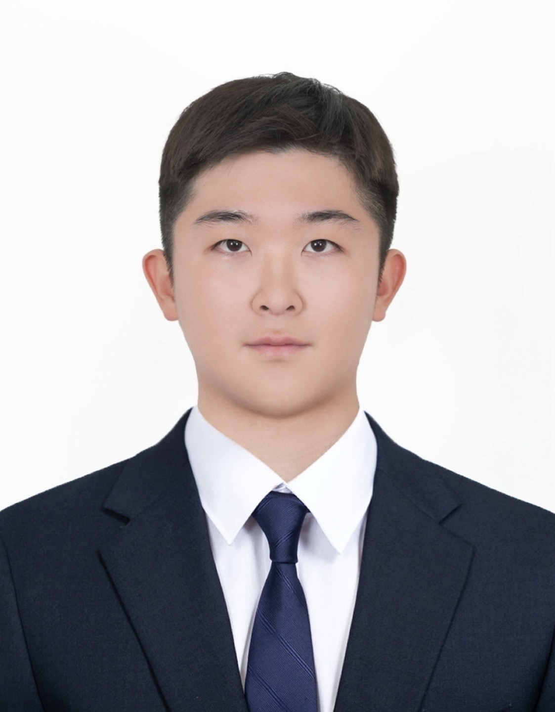

Minseung Kim

ORCID
Ph.D. Student
Department of Electrical and Electronic Engineering, Hanyang University
minseung224@hanyang.ac.kr
Google ScholarORCID
Education
- B.S. in Department of Electrical and Control Engineering, Mokpo National University (2019 - 2022)
- M.S. in Department of Electrical Engineering, Mokpo National University (2022 - 2024)
- Ph.D. in Department of Electrical and Electronic Engineering, Hanyang University (2024 - )
Academic Service
- Reviewer: IEEE Access